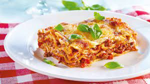

Lasagna

Description
Lasagna are a type of pasta, possibly one of the oldest types,[2] made of very wide, flat sheets.
Ingredients
- 3 each skinless, boneless chicken breast halves
- 1 (8 ounce) package lasagna noodles
- ½ cup grated Parmesan cheese, divided
- 2 (26.5 ounce) cans spaghetti sauce, divided
Steps
- Preheat the oven to 350 degrees F (175 degrees C).
- Bring a large pot of water to a boil over medium-high heat and add chicken breasts; reduce heat and let simmer until chicken falls apart easily with a fork and is no longer pink, 10 to 15 minutes. Drain water, shred chicken with 2 forks, and set aside.
- While chicken is boiling, bring a large pot of lightly salted water to a boil. Cook lasagna noodles in the boiling water, stirring occasionally, until tender yet firm to the bite, about 8 minutes. Drain and lay noodles in a single, flat layer on a paper towel to dry.
- Heat butter in a small saute pan over medium-high heat. Saute onion and garlic in the hot butter just until onion is translucent, 5 to 7 minutes.
- Mix shredded chicken, onion-garlic mixture, 1 cup spaghetti sauce, ricotta cheese, 1/2 of the Parmesan cheese, and Italian seasoning together in a large bowl.
- Mix remaining spaghetti sauce and remaining Parmesan cheese together in another bowl. Spread a thin layer on the bottom of a glass 9x13-inch baking dish. Layer 3 lasagna noodles, spread chicken mixture on top, then add another thin layer of the sauce mixture. Repeat, leaving a final layer of noodles on top. Top with remaining sauce. Sprinkle mozzarella and Cheddar cheese on top.
- Bake in the preheated oven until heated through and cheese bubbles, about 45 minutes.